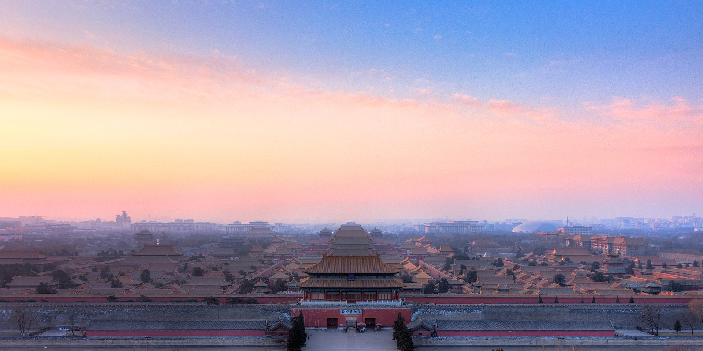

China, one of the world’s oldest civilizations, is a country with a long history, rich culture, and diverse natural landscapes. As a vast nation stretching from the snow-covered mountains of Tibet to the tropical beaches of Hainan, China offers countless travel destinations for people from all over the world. In recent years, tourism has become one of the fastest-growing industries in China, attracting not only millions of foreign visitors but also a large number of dom.
Traveling in China is not only about seeing famous landmarks such as the Great Wall, the Forbidden City, or the Terracotta Warriors — it is also about experiencing the deep traditions, delicious cuisines, and unique lifestyles of different regions. Every province has its own charm and story to tell, from the historical wonders in Beijing and Xi’an to the modern skylines of Shanghai and Chengdu, and the breathtaking natural beauty of Guilin and Hangzhou.

China is a vast and beautiful country located in East Asia. It is one of the world’s oldest civilizations, with more than five thousand years of history. China is famous for its rich culture, long trad.
Covering a large area, China has many different kinds of natural scenery — from high mountains and wide grasslands in the west to rivers, forests, and seas in the east. Because of its large size and diverse geography, each region has its own unique culture, language, and food.
Today, China is not only known for its ancient heritage, such as the Great Wall and the Forbidden City, but also for its modern cities like Beijing, Shanghai, and Shenzhen. It is a country where history and modern life exist side by side, making it an attractive destination for traveler.
As of July 2025, the People's Republic of China has 60 World Heritage Sites, including 15 natural heritage sites, 41 cultural heritage sites and 4 dual heritage sites, which makes the total number of World Heritage Sites in the People's Republic of China ranked second in the world, second only to Italy. Popular tourist destinations in the People's Republic of China include Beijing, Shanghai, Guangzhou, Xi'an, Chengdu, Qingdao, Xiamen, Hangzhou, Chongqing, etc., and famous attractions include the Great Wall, the Forbidden City in Beijing, the Terracotta Warriors and Horses of the Qin Shi Huang Mausoleum, Guilin Landscape, the Three Gorges of the Yangtze River, Mogao Grottoes, Potala Palace, Jiuzhaigou, Huangshan, Suzhou Classical Gardens, West Lake, Mount Tai, etc.